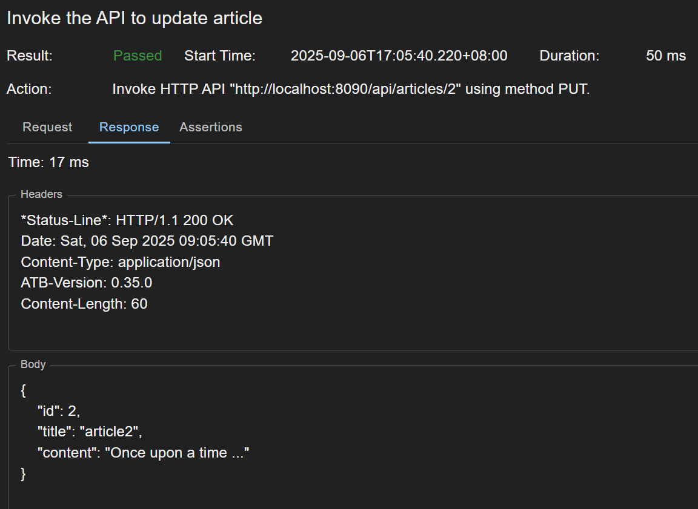

We are going to demo how to test a REST API that updates an article record in database, like shown below.

The REST API is the sample Article API that is bundled with API Test Base. It does CRUD operations on the records in the Article table in a sample H2 database. The sample database is automatically created under <ATB_DATA_DIR>/database when API Test Base is launched for the first time. Refer to Administration for more details.
We are planning to have three test steps in our test case
1. Set up database data
2. Invoke the API to update article
3. Check database data
Create Skeleton Test Case
First of all, create a new test case, by right clicking anywhere in the left side pane and selecting New Test Case. A wizard pops up.

Select the HTTP - DB pattern, and the pattern details form displays. Populate test case name Update Article, scenario Update, HTTP Endpoint URL http://localhost:8090/api/articles/2, Database Endpoint JDBC URL jdbc:h2:${ATB_Data_Dir}/database/sample;AUTO_SERVER=TRUE, Username user and Password pass.

Here the scenario Update means we are testing a resource-update scenario. HTTP Endpoint is the endpoint of the REST API we are going to test. Database Endpoint is the endpoint of the sample H2 database.
For more details about the ${ATB_Data_Dir} in the Database Endpoint JDBC URL, please refer to Properties.
Click OK to create the skeleton test case.
Under the Test Steps tab, click somewhere in the blank space inside the HTTP step’s name cell, and rename the step to Invoke the API to update article.
The skeleton test case is as shown below.

Populate Step 1
Click the name of step 1 to open its edit view.
Under the Invocation tab, enter below SQL script.
-- Clear the table
delete from article;
-- Create two article records
insert into article (id, title, content) values (1, 'article1', 'content1');
insert into article (id, title, content) values (2, 'article2', 'content2');
Click the Invoke button to try it out (i.e. run the script), like shown below.

Populate Step 2
Open step 2 from the test case.
Under the Invocation tab, select JSON from the Body type dropdown list, and paste the request body:
{
"id": 2,
"title": "article2",
"content": "Once upon a time ..."
}
Click the Invoke button to try it out.

Click the Assertions tab at the bottom of the screen to open the assertions panel.
Select the StatusCodeEqual assertion and click the Verify button to verify the assertion, as shown below.

More information about assertions can be found at Assertions.
Populate Step 3
Open step 3 from the test case.
Under the Invocation tab, enter SQL query select id, title, content from article;.
Click the Invoke button to try it out (run the query), like shown below.

Click the Assertions tab to open the assertions panel.
Select the JSONEqual assertion, copy the JSON string from the test step invocation response to the Expected JSON field, and click the Verify button to verify the assertion, as shown below.

Run the Test Case
Now we have finished editing our test case. It’s time to run it. Open the test case, click the Run button and you’ll see the result, like shown below.

Click a test step in the right side outline to open a modal and see the step’s run report, like shown below.

Sample Test Case
The test case created above is available for download at sample test case. After download, right click anywhere in the left side pane on ATB UI, and select Import Test Case to import it.